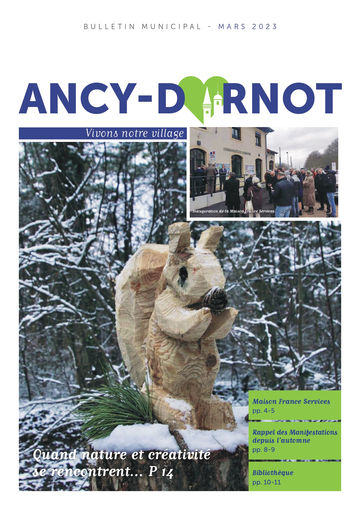

Bulletins municipaux et lettres d'information

{kind=link}
En détail...
- CategorieSupports éditoriaux
- Contexte Participation à la conception et réalisation des bulletins d'information de la commune distribués aux habitants dans le cadre de la politique de transparence et d'information citoyenne
- Mon rôle Rédaction d'articles thématiques et d'actualité Correction et révision des contenus Conseil éditorial et avis sur la mise en page Coordination avec l'équipe éditoriale et les élus contributeurs Suivi du processus de publication
- Défis relevés Adaptation du style rédactionnel aux différentes rubriques et sujets Vulgarisation des informations administratives et techniques Respect des contraintes éditoriales (espace, délais) Harmonisation des contributions provenant de sources diverses Garantie de l'exactitude et de la pertinence des informations publiées Respect de la neutralité et objectivité institutionnelle
- Impact territorial Amélioration de la transparence administrative Renforcement du lien citoyen par information de qualité Valorisation des actions municipales auprès des habitants Contribution à la démocratie locale par l'information
- Collaboration Coordination avec élus contributeurs pour validation contenus Interface avec services municipaux pour informations techniques Collaboration avec équipe éditoriale pour harmonisation Relation avec imprimeur pour optimisation technique
- Résultats Publications de qualité informant efficacement les habitants Valorisation claire et structurée des actions et projets municipaux Cohérence éditoriale entre les différentes éditions Document de référence pour la vie communale Support de communication accessible à tous les habitants